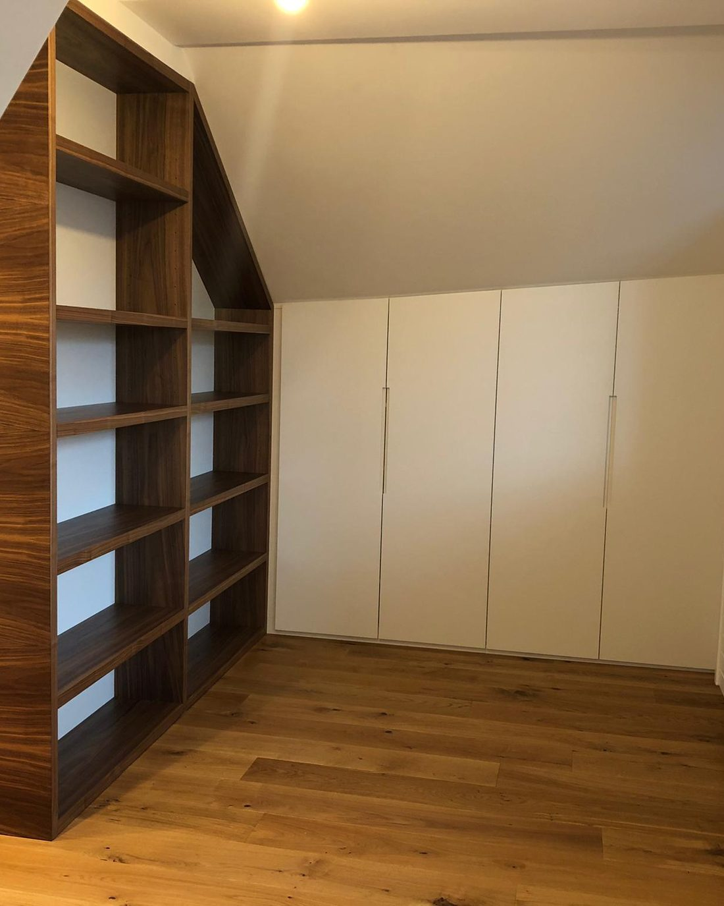
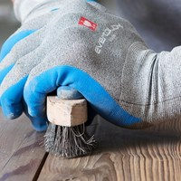
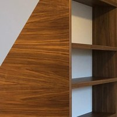
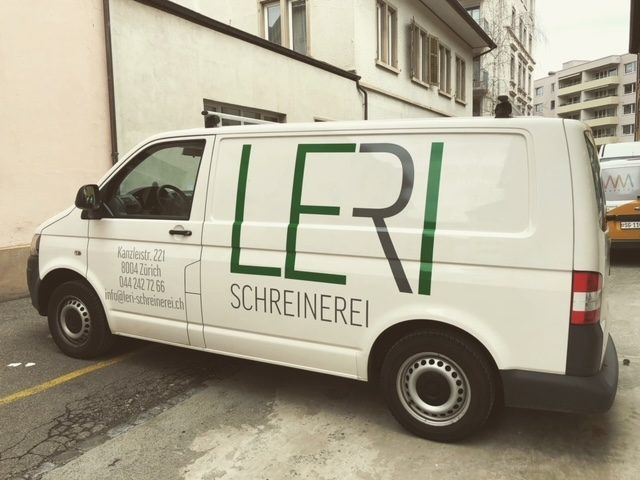
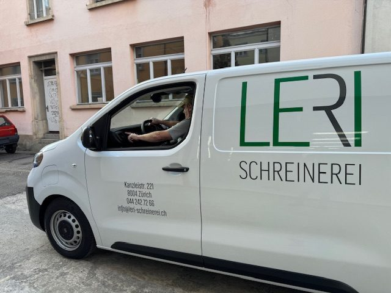

Innenausbau
Küchen, Badezimmer, Schrankwände und Garderoben — massgerecht geplant und umgesetzt, auch mit Erfahrung bei Denkmalschutz und Brandschutz.
Ihr Schreiner. Einer für Alles.
Schreinerei im Zürcher Kreis 4
0 %
LERI Schreinerei AG · Kanzleistrasse 221 · 8004 Zürich

Schreinerei · Zürich Kreis 4
Innenausbau, Möbel nach Mass und Reparaturservice — von der Skizze bis zum letzten Schliff. Aus unserer eigenen Werkstatt an der Kanzleistrasse 221, mitten in der Stadt Zürich.


Zu unseren Kunden gehören Kantonsschule Wiedikon, Universitätsspital Zürich, Genossenschaften und Immobilienverwaltungen.
Über uns
LERI ist aus der Zusammenführung von zwei traditionsreichen Zürcher Schreinereien entstanden. Heute sind wir ein eingespieltes Vierer-Team mit eigener Werkstatt und eigenem Montagefahrzeug — mitten im Kreis 4.
Vier gelernte Schreiner und ein Lernender, fest im Betrieb — kein Wechselpersonal, sondern dieselben Gesichter bei jedem Auftrag.
Er führt die Schreinerei: eidg. dipl. Werkmeister HF und dipl. Betriebsökonom NDS HF.
Handwerk und moderne Technik in derselben Werkstatt: Präzision, die auch bei Serien passt.

Leistungen
Alles rund ums Holz, aus einer Hand: ein Betrieb, ein Ansprechpartner, eine Werkstatt im Zürcher Kreis 4.

Küchen, Badezimmer, Schrankwände und Garderoben — massgerecht geplant und umgesetzt, auch mit Erfahrung bei Denkmalschutz und Brandschutz.

Schränke, Garderoben, Sideboards und Tische, in sorgfältiger Handarbeit für Sie gefertigt — Unikate statt Katalogware.

Alte Lieblingsstücke und Antiquitäten sind bei uns in besten Händen: wir flicken, ergänzen und frischen auf, wo es sinnvoll ist.

Türen, Schlösser, Küchenfronten und Beschläge: rasch und kompetent sorgen wir dafür, dass alles wieder reibungslos funktioniert.

Wir montieren mit eigenem Wagen, räumen auf und übergeben fertig — erst dann sind wir fertig.

Ausbauten, Unterhalt und Instandsetzung in Wohnliegenschaften — auch die Arbeiten beim Mieterwechsel.
Warum LERI
Kein Zwischenhändler, keine wechselnden Equipen: Sie sprechen mit den Leuten, die Ihre Arbeit auch bauen.
Ob neue Möbel nach Mass, eine frisch aufgearbeitete Lieblingskommode, eine eingebaute Küche oder die Reparatur, die keinen Aufschub duldet: Sie haben bei uns einen Ansprechpartner für alles.
LERI baut auf Fachwissen und Erfahrung, ergänzt durch moderne Technologie und eine grosse Portion Fingerspitzengefühl. Mit unserer computergesteuerten CNC-Maschine arbeiten wir präzise — auch bei kurzfristigen Terminen.

Wir nehmen uns Zeit, Ihre Ansprüche zu verstehen, bevor wir beraten — und wir sind erst zufrieden, wenn Sie es sind. Wir montieren mit eigenem Fahrzeug und übergeben fertig.
So arbeiten wir
Drei Schritte, und Sie wissen, woran Sie sind.
Sie schildern uns Ihr Vorhaben — telefonisch, per Mail oder bei einem Kaffee in der Werkstatt.
Wir kommen vorbei, messen auf und besprechen Material, Ausführung und Termin.
Sie erhalten eine klare Offerte. Nach Ihrem Ja bauen wir in der eigenen Werkstatt, montieren und übergeben fertig.
Referenzen
Keine erfundenen Stimmen und keine Sterne: hier stehen die Auftraggeber, die uns seit Jahren holen — und wofür.
Öffentliche Einrichtungen
Schreinerarbeiten für öffentliche Bauten: Ausbauten, Einbauten und Reparaturen im Bestand.
Genossenschaften und Verwaltungen
Ausbauten und Reparaturen in Liegenschaften, Arbeiten beim Mieterwechsel und für Immobilienverwaltungen — im Unterhalt und in der Instandsetzung.
Firmen und Ladenlokale
Tresen, Einbauten und Möbel für Läden, Büros und Gastronomiebetriebe — nach Mass gefertigt und montiert.
Dazu Architekten und Bauleiter sowie viele Privatpersonen, die seit Jahren mit uns arbeiten. Gerne zeigen wir Ihnen weitere Referenzen und Muster bei einem Kaffee in der Werkstatt.
Häufige Fragen
Antworten, die wir auch am Telefon geben — ohne Versprechen, die wir nicht halten können.
Rufen Sie uns an unter 044 242 72 66, schreiben Sie an info@leri-schreinerei.ch oder kommen Sie in der Werkstatt vorbei. Wir schauen uns Ihr Vorhaben an, messen bei Bedarf vor Ort auf und stellen Ihnen danach eine Offerte zusammen. Wie lange das dauert, hängt vom Umfang des Projekts ab — wir sagen Ihnen offen, womit Sie rechnen können.
Ja. Küchenfronten richten, Beschläge ersetzen, Türschlösser flicken, Schäden durch Wasser oder Glasbruch und Kleinreparaturen beim Mieterwechsel gehören bei uns zum Alltag.
Ja. Zu unseren Kunden zählen öffentliche Einrichtungen (u. a. Kantonsschule Wiedikon und Universitätsspital Zürich), Genossenschaften und Immobilienverwaltungen. Wir arbeiten beim Mieterwechsel, im Unterhalt und in der Instandsetzung von Liegenschaften.
Ja. Das Anfertigen und Montieren von Brandschutz-Abschlüssen gehört bei uns zum Alltag, und wir haben Erfahrung im Umgang mit Denkmalschutz-Vorschriften.
Sehr gerne. Werkstattbesuche und Aufmasse machen wir nach Vereinbarung — am besten kurz anrufen, dann sind wir garantiert da. Sie finden uns an der Kanzleistrasse 221 im Zürcher Kreis 4.
Kontakt
Rufen Sie an, schreiben Sie eine Mail oder kommen Sie in der Werkstatt vorbei, mitten im Zürcher Kreis 4. Wir laden Sie gerne zu einem Kaffee ein.